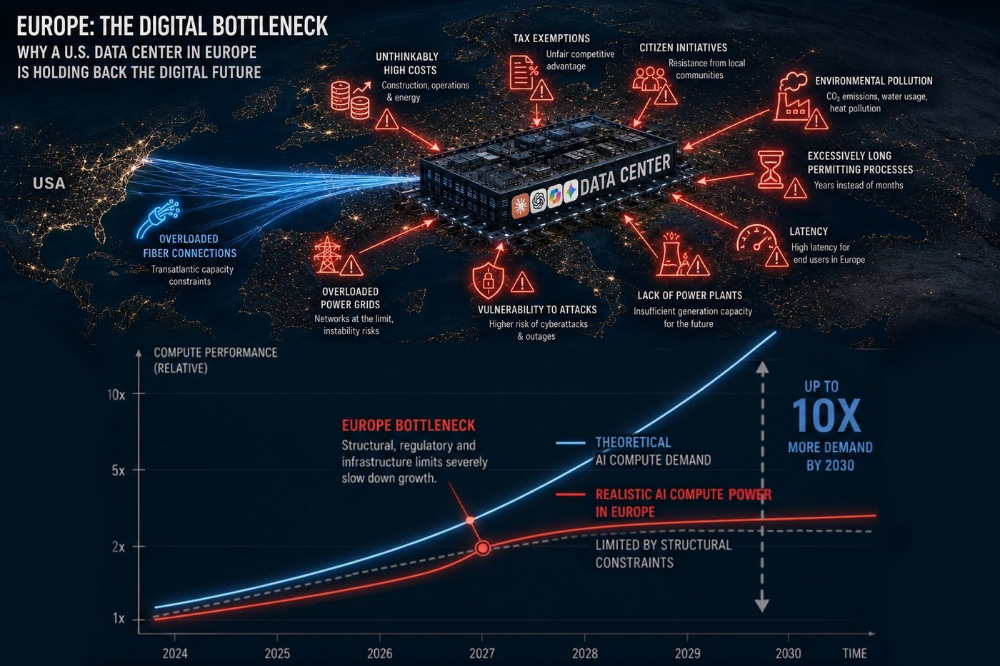
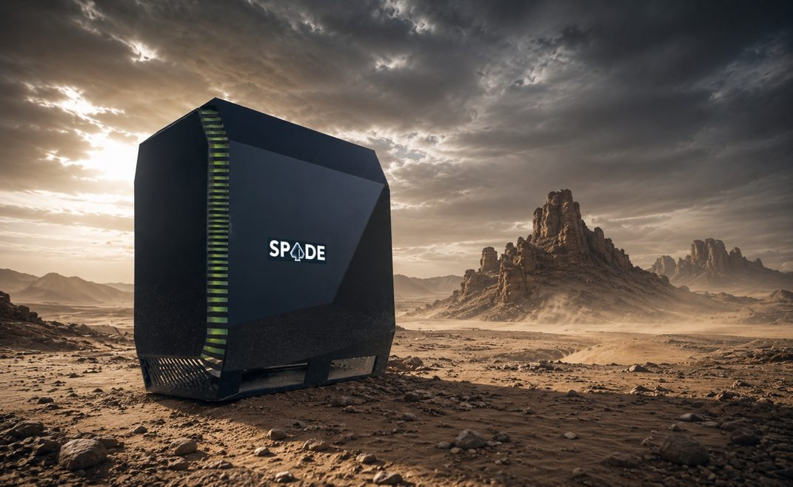
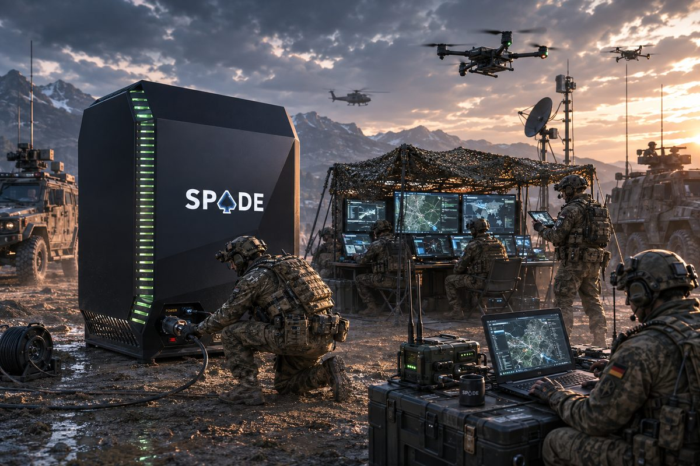
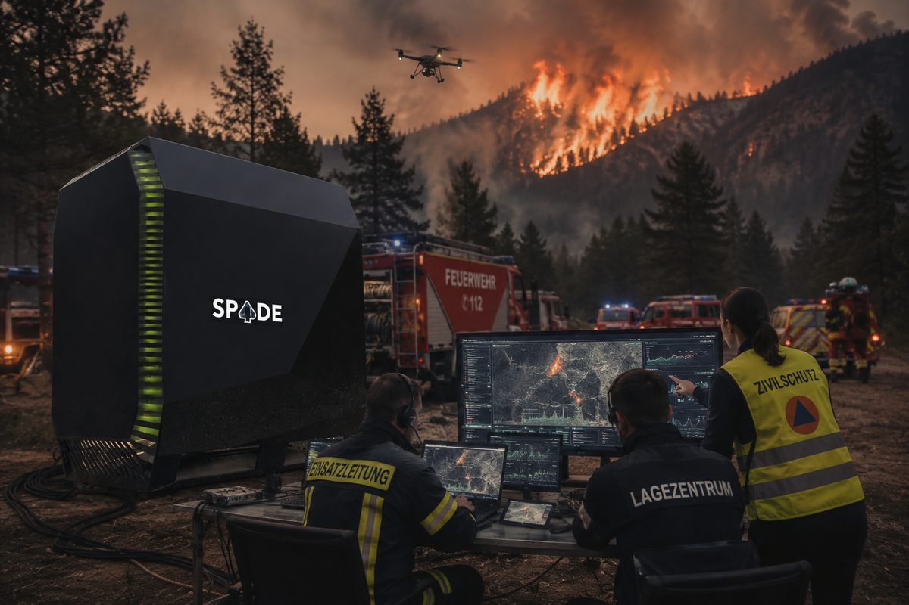
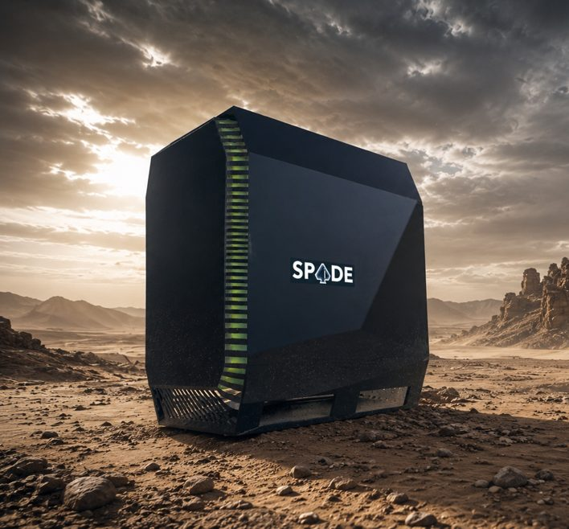

Grid-constrained by design
New sites are bottlenecked by power availability, transmission capacity, and years-long construction and permitting timelines.
The SPAiDE Pentacube is a full data center that deploys anywhere in under 10 minutes — sovereign, mobile, and built for Europe's existing power and logistics infrastructure.
Capacity as a production rate, not a construction project: our roadmap is measured in units per month, not years per site.

New sites are bottlenecked by power availability, transmission capacity, and years-long construction and permitting timelines.
US cloud providers control more than 70% of the EU market — Europe spends €264bn a year on foreign IT infrastructure.
Fixed data centers are exposed, single-point targets that suffer from latency and network congestion at the edge.
Modern operations — from disaster response to defense — need real compute where the mission is, not three hops away.
"We have a lot of homework to do to achieve technological sovereignty. But Europe has the strengths and the political resolve to succeed."
Henna VirkkunenExecutive VP for Tech Sovereignty, Security & Democracy · European Commission, 2025"This is essential for our competitiveness, our security, and to protect our social models and democracy."
Prof. Monika SchnitzerChair, German Council of Economic Experts · Sachverständigenrat, 2025"The startups for this exist; we should bring them together with large industrial companies — including in defense."
Max von ThunDirector, Europe & Transatlantic Partnerships · Open Markets Institute, 2026"Wherever a welding machine can run — a full data center can too."
A fundamentally new infrastructure-compatible form factor, built on research at UniBw Munich. The Pentacube draws on a standard industrial AC socket and moves through the same logistics chains as a Euro pallet — no dedicated electrical infrastructure, no grid upgrades, no construction.

Standard 400V / 32A CEE industrial socket — the same connection used for equipment like welding machines.
Fits any Euro pallet, moves with standard logistics — pallet trucks, forklifts, and freight systems.
European native by design — ITAR-free components, built for European power and regulatory standards.
Add units to scale capacity linearly, on demand — no bespoke construction project per site.
Built for field conditions, not the server room — from desert heat to disaster response terrain.
Real-world use case: sovereign, tactical AI compute for the Bundeswehr — no fixed infrastructure required.

Defense Locations
Disaster Management
Remote AreasDefense & security academia, deep-tech operators, and serial founders — with roughly five years of university research behind the product and existing connections into the German defense sector. Meet our two Managing Directors.

Traditional data centers can't meet projected demand within existing constraints — Europe's IT load is expected to grow from 10 to 35 GW by 2030 (McKinsey). Power grid capacity, space, regulation, and construction timelines all fall short. In defense, there's a separate shortage of mobile compute in the field — modern operations need edge solutions with minimal latency.
The Pentacube runs on a standard 400V/32A CEE industrial socket — the same connection used for welding machines — delivering over 18 kW of usable compute without dedicated electrical infrastructure or grid upgrades. Its Euro pallet dimensions (120×80×150 cm) make it fully compatible with standard logistics, enabling deployment in under 10 minutes.
We will have completed a demonstrator by mid-November 2026. It follows roughly five years of underlying university research — this is the first time that research is being turned into a working product.
Five market segments benefit most from mobile compute: Military & Government (NATO, Bundeswehr, Police, Civil Protection); Energy & Industry (wind farms, oil platforms, mining, construction); Events & Broadcast; Humanitarian Aid (UNHCR, Red Cross, NGOs, disaster relief); and Field Research.
Rittal builds stationary, bulky rack enclosures — not mobile, rugged, or compact. Armada is capable and plug-and-play but not European, and lacks ultra-mobility and quick availability. Schneider treats data center infrastructure as a sub-division. SPAiDE is a genuinely European company, fully compatible with the European power grid, in a smaller sub-container format built for last-mile deployment.
Reach out to either of our Managing Directors directly, or write to the company address below.